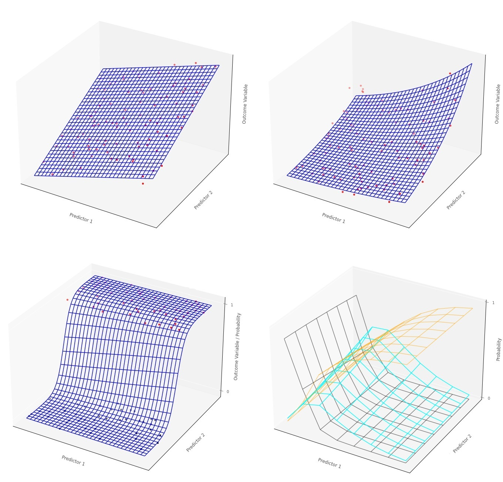

Islands - Generalized Linear Models
Contents
Islands - Generalized Linear Models#

{kind=link}
This is a short textbook introducing generalized linear models. Generalized linear models are a modelling framework which unifies \(t\)-tests, ANOVA, ANCOVA and multiple linear regression with other regression techniques like logistic regression and survival analysis. All generalized linear models can be expressed as:
(Where there are \(k\) predictor variables, and \(n\) observations).
The above equation reads as ‘the expected value of the outcome variable is a linear function of the predictor scores, for the \(i\)th observation’. For some generalized linear models (like linear regression) the linear prediction equation predicts the outcome variable directly, on it’s original scale. For others, like Poisson regression, the linear prediction equation models the outcome variable on some other scale (e.g. a logarithmic scale).
This flexibility - stemming from the linear prediction equation being fit on different scales - allows for generalized linear models to be applied to a wide variety of outcome variables. The array of techniques that fall within the generalized linear modelling framework, and the variety of outcome variables they can be applied to, make generalized linear modelling an essential ‘swiss army knife’ tool for statistical modelling.
Who this book is for#
Sometimes generalized linear models are taught in a way that involves interpretting the output of statistical software without getting into how the models work at the nuts and bolts level. This book is intended for readers who have taken undergraduate statistics classes in social or life science and who want to understand how generalized linear models get their parameter estimates, in a way that goes beyond just interpretting tables from statistical software.
My background is in psychology, so this book is written from an applied statistics perspective. However, this book delves slightly deeper into the mechanics of generalized linear models than some applied statistics textbooks that I have read. My focus is on how the models estimate their parameters, by minimizing their cost functions (analogous to minimizing the sum of the squared error in linear regression). This book:
Assumes familiarity with different types of variable (quantitative, nominal-categorical, ordinal-categorical)
Assumes familiarity with linear regression
Assumes the ability to read mathematical formulae
Assumes knowledge of logarithms and exponents
Knowledge of python is helpful but not essential, as the examples are all generated using python code
This book is written in the Jupyter notebook format. It contains text cells like the one you are reading, alongside code cells (like the one below) which also appear throughout this book. The code cells are used to run Python code, in order to generate the data and graphs for the examples. Anything in a code cell that comes after the # symbol is a comment and explains what the code is doing, but is not run by the computer as code:
# this is a code cell, this text you are reading is a comment. The code below tells this code cell to print some text
print('This is the output of a code cell.')
This is the output of a code cell.
If you want to use this textbook interactively, bu running python code yourself, playing with the data/graphs etc. You can download all of the notebooks from: https://github.com/pxr687/islands_generalized_linear_models
All the island maps were generated with: https://www.redblobgames.com/maps/mapgen4/
By pxr687